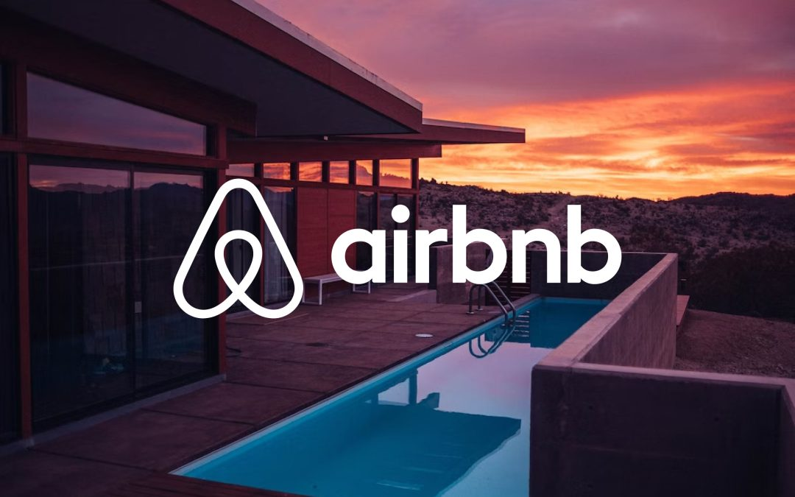

Projects

Real Estate Blockchain Project
Developing a decentralized platform for transparent real estate transactions using Ethereum and IPFS.
View on GitHub

Airbnb Clone
A Flask-based web app for user authentication, property listings, bookings, and reviews management
View on GitHub
Sitesweep: Data Scraper
Web scraping application designed to help users collect, store, and manage data from websites effortlessly
View on GitHub
Frontend Projects
Focuses on building user interfaces, ensuring responsive design, interactivity, and smooth user experience using HTML, CSS, JavaScript
View on GitHubChange Management Databricks ETL Project
A Change Management Dashboard using Flask, Databricks ETL, and MySQL to centralize, transform, and analyze data from ITSM and Azure DevOps for reporting.
View on GitHub